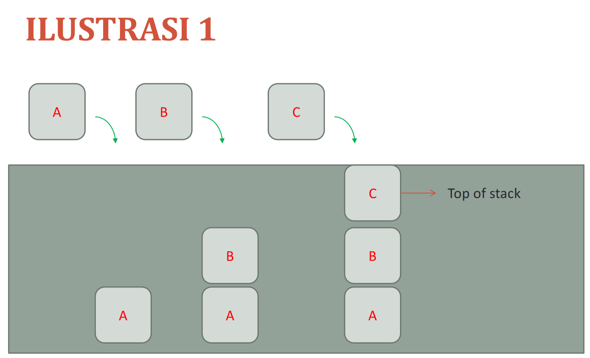
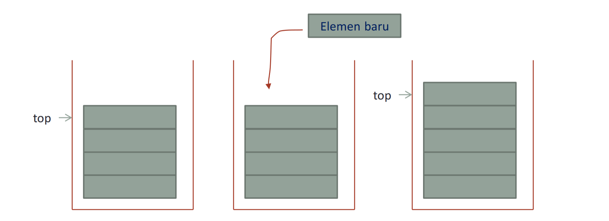
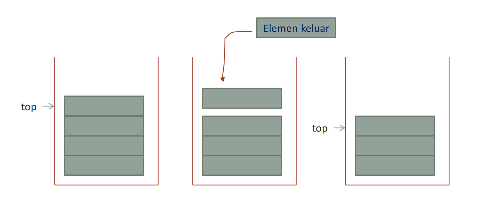

STACK
Penyimpanan dan pengambilan data yang sangat efektif apabila data yang terakhir masuk adalah data yang akan diambil pertama kali.
Tumpukan memungkinkan akses ke satu item data saja, yaitu item terakhir yang disisipkan.
Bila kita menghilangkan item ini maka kita bisa mengakses ke sebelah item terakhir yang disisipkan, dan seterusnya.
Sejarah
Tumpukan pertama kali diusulkan pada tahun 1955, dan kemudian dipatenkan pada tahun 1957, oleh Friedrich L. Bauer Jerman.
Konsep yang sama dikembangkan secara independen, pada sekitar waktu yang sama, oleh Leonard Charles Australia Hamblin.
Pengertian
Stack merupakan tumpukan data yang seolah- olah diletakkan di atas data yang lain Kita dapat menambahkan (menyisipkan) data dan mengambil (menghapus) data melalui ujung yang sama, yang disebut sebagai ujung atas stack (top of stack).Stack bersifat LIFO (Last In First Out).Benda yang terakhir masuk ke dalam stack akan menjadi yang pertama keluar dari
Karakteristik Stack
-
Elemen stack yaitu item-item data di ada di dalam elemen stack.
-
Top (elemen puncak dari stack)
-
Jumlah elemen pada stack.
-
Status / kondisi stack.
KONDISI STACK
KONDISI STACK Kondisi stack yang perlu diperhatikan adalah:
-
Penuh: bila elemen stack mencapai kapasitas maksimum. Pada kondisi ini tidak mungkin dilakukan penambahan ke stack.
-
Kosong: bila tidak ada elemen di stack. Pada kondisi ini, tidak mungkin dilakukan pengambilan elemen dari stack
STACK REPRESENTASI STATIS
-
Biasanya diimplementasikan dengan menggunakan array.
-
Karena itu, stack dengan representasi statis dapat mengalami kondisi elemen penuh.
STACK REPRESENTASI DINAMIS
-
Biasanya diimplementasikan dengan menggunakan pointer yang menunjuk pada elemen-elemen yang dialokasikan pada memori.
-
Elemen ditambahkan akan menggunakan penambahan elemen pada awal stack (addfirst).
-
Saat pengambilan atau penghapusan elemen menggunakan penghapusan di awal stack (delfirst).
ILUSTRASI
.png)
OPERATOR-OPERATOR DI DALAM STACK
-
OPERASI PUSH
-
Sebagai kondisi awal ada sebuah stack yang telah memiliki beberapa elemen dengan elemen paling atas sebagai top.
-
Dibuat sebuah elemen baru yang akan dimasukkan ke dalam stack.
-
Elemen baru dimasukkan ke dalam stack.
-
Penunjuk top pada stack diubah menunjuk ke elemen yang baru saja ditambahkan.

-
OPERASI POP
-
Sebagai kondisi awal ada sebuah stack yang telah memiliki beberapa elemen dengan elemen paling atas sebagai top.
-
Penunjuk top diubah menjadi menunjuk elemen di bawah elemen atas.
-
Elemen atas diambil dari stack.

-
ISEMPTY
-
ISFULL
Adalah operasi menambahkan elemen baru pada sebuah stack.Aturan penambahan stack:
Adalah operasi mengambil sebuah elemen dari sebuah stack. Aturan mengambil sebuah elemen dari sebuah stack adalah sebagai berikut:
Operator ini berfungsi untuk menentukan apakah suatu stack adalah stack kosong. Operasinya akan bernilai boolean, dengan definisi sebagai berikut :
Operator ini berfungsi untuk menentukan apakah suatu stack adalah stack penuh. Operasinya akan bernilai boolean, dengan definisi sebagai berikut :
PENGGUNAAN STACK
-
Dalam dunia komputer, penggunaan stack (tumpukan) merupakan suatu hal yang umum digunakan seperti untuk penentuan alamat memory, penempatan ruang data dan aplikasi lain.
-
Aplikasi stack juga digunakan untuk berbagai macam keperluan seperti pengujian kalimat palindrome, penguji tanda kurung (matching parentheses), dan juga berfungsi sebagai konversi dari notasi infix menjadi notasi postfix.